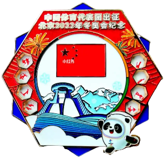

2024年北京中考历史 第23题 解析
23. 体育运动·时代变迁·社会发展
材料一 中世纪，体育运动在大众中不普及，学校不设体育课，只在骑士教育中有剑术和骑术等军事体育内容。1423年意大利教育家创立了一所“宫廷学校”，主张读书和运动相结合，制定了许多锻炼身体的制度和方法，体育成为学校教育的一项内容。1569年一位意大利医生在研究古代希腊、罗马体育和运动基础上出版《体操术》，主张民众应该从事多项运动以维持身体健康。
——摘编自谭华等《体育史》
（1）依据材料一并结合所学，指出15世纪前后体育运动发生 变化及其时代背景。
变化及其时代背景。
材料二 19世纪初，欧洲工业化城市人口急剧增加。为了满足市民体育锻炼的场地需求，一些城市兴建了城市公园，促进了大众户外体育运动发展。19世纪中期，足球、网球等运动兴起并逐步形成了统一的运动规则。19世纪末20世纪初，各种商业体育俱乐部大量产生，主要通过出售门票获得商业利益：很多观众乘电车和火车到现场观赛。比赛消息还能通过电波和报纸传到各地，吸引大众参与体育活动。
——摘编自托尼·柯林斯《体育简史》等
（2）依据材料二并结合所学，概括19世纪初到20世纪初欧洲体育运动发展的表现、分析其发展的历史条件。
材料三 夏季奥运会参赛情况（部分）
| 第1届 （1896年） | 第2届 （1900年） | 第23届 （1984年） | 第29届 （2008年） | 第31届 （2016年） |
参赛国家和地区（个） | 14 | 26 | 140 | 204 | 207 |
参赛运动员（人） | 241 | 1226 | 6829 | 10942 | 11238 |
女子项目（项） | 0 | 2 | 62 | 127 | 145 |
奥林匹克格言是“更快、更高、更强”，2021年国际奥委会将“更团结（Together）”加入其中。
中国体育代表团出征北京2022年冬奥会纪念徽章（见右图），以五星红旗及“冰丝带”“雪如意”等现代化体育场馆为设计元素。奥运会徽章承载不同地区和民族的文化，观众、运动员等通过交换徽章，了解彼此，增进友谊。

（3）依据材料三，概括现代奥林匹克运动会的发展情况。说明现代奥林匹克运动会在当今世界发挥的作用。
【答案】（1）
变化：从体育运动在大众中不普及、学校不设体育课且仅在骑士教育中有军事体育内容，变为体育成为学校教育的一项内容且有医生主张民众从事多项运动维持身体健康。
时代背景：文艺复兴运动兴起，人文主义思想传播，强调人的价值和尊严，重视人的全面发展，推动了体育观念的转变。
（2）
表现：城市公园兴建促进大众户外体育运动发展；足球、网球等运动兴起并形成统一运动规则；商业体育俱乐部大量产生，通过出售门票获得商业利益；观众数量增多，可乘电车和火车到现场观赛，也可以通过电波和报纸传播接收通讯，吸引大众参与体育活动。
历史条件：工业革命推动欧洲工业化城市人口急剧增加，为体育运动发展提供了人口基础；工业革命促进交通、通讯、等技术的发展，为人们参与体育运动和传播体育消息提供了便利条件；资本主义经济的发展为商业体育俱乐部的产生提供了经济基础。
（3）
发展情况：参赛国家和地区、参赛运动员数量不断增加；女子项目不断增多；奥林匹克格言加入 “更团结”；奥运会徽章承载文化，促进交流。
作用：促进了体育事业的发展；促进人类团结、合作的追求，有助于推动各国人民之间的交流与合作，增进相互理解和友谊；促进了不同地区和民族文化的交流与传播，丰富了世界文化的多样性。
【解析】
【小问1详解】
变化：根据材料一“体育运动在大众中不普及，学校不设体育课，只在骑士教育中有剑术和骑术等军事体育内容”“体育成为学校教育的一项内容”“1569年一位意大利医生在研究古代希腊、罗马体育和运动基础上出版《体操术》，主张民众应该从事多项运动以维持身体健康”可得出，15世纪前后体育运动发生的变化为从体育运动在大众中不普及、学校不设体育课且仅在骑士教育中有军事体育内容，变为体育成为学校教育的一项内容且有医生主张民众从事多项运动维持身体健康。
时代背景：根据材料一“1423年意大利教育家创立了一所“宫廷学校”，主张读书和运动相结合”“1569年一位意大利医生在研究古代希腊、罗马体育和运动基础上出版《体操术》”和所学知识可知，可以从文艺复兴的内容等角度进行分析时代背景，所以，时代背景为文艺复兴运动兴起，人文主义思想传播，强调人的价值和尊严，重视人的全面发展，推动了体育观念的转变。
【小问2详解】
表现：根据材料二“一些城市兴建了城市公园，促进了大众户外体育运动发展”可得出，城市公园的兴建促进大众户外体育运动发展；根据材料二“19世纪中期，足球、网球等运动兴起并逐步形成了统一的运动规则”可得出，足球、网球等运动兴起并形成统一运动规则；根据材料二“19世纪末20世纪初，各种商业体育俱乐部大量产生，主要通过出售门票获得商业利益”可得出，商业体育俱乐部大量产生，通过出售门票获得商业利益；根据材料二“很多观众乘电车和火车到现场观赛。比赛消息还能通过电波和报纸传到各地，吸引大众参与体育活动”可得出，观众数量增多，可乘电车和火车到现场观赛，也可以通过电波和报纸传播接收通讯，吸引大众参与体育活动。
历史条件：根据材料二“19世纪初，欧洲工业化城市人口急剧增加”和所学知识可知，工业化是工业革命带来的结论。因此，工业革命推动欧洲工业化城市人口急剧增加，为体育运动发展提供了人口基础；根据材料二“很多观众乘电车和火车到现场观赛。比赛消息还能通过电波和报纸传到各地”和所学知识可知，电车、火车、电波和报纸是工业革命的产物。因此，工业革命促进交通、通讯、等技术的发展，为人们参与体育运动和传播体育消息提供了便利条件；根据材料二“19世纪末20世纪初，各种商业体育俱乐部大量产生，主要通过出售门票获得商业利益”和所学知识可知，可以从资本主义经济角度进行分析，所以，资本主义经济的发展为商业体育俱乐部的产生提供了经济基础。
【小问3详解】
发展情况：根据材料三“夏季奥运会参赛情况（部分）”“参赛国家和地区（个）”“参赛运动员（人）”“女子项目（项）”可得出，从第1届到31届，参赛国家和地区、参赛运动员数量不断增加；女子项目不断增多；根据材料三“奥林匹克格言是‘更快、更高、更强’，2021年国际奥委会将‘更团结（Together）’加入其中。”可得出，奥林匹克格言加入 “更团结”；根据材料三“奥运会徽章承载不同地区和民族的文化，观众、运动员等通过交换徽章，了解彼此，增进友谊”可得出，奥运会徽章承载文化，促进交流。
作用：根据所学知识可知，可以从体育事业、人类团结、各国人民之间的交流与合作、增进友谊、促进民族文化的交流、丰富世界文化多样性等角度进行分析，所以，现代奥林匹克运动会在当今世界发挥的作用为促进了体育事业的发展；促进人类团结、合作的追求，有助于推动各国人民之间的交流与合作，增进相互理解和友谊；促进了不同地区和民族文化的交流与传播，丰富了世界文化的多样性。